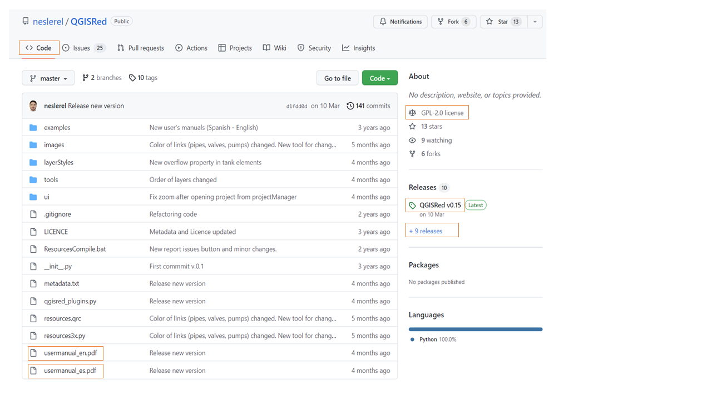

¿Qué es un segmento aislado?
Un segmento es la mínima unidad de red que puede aislarse completamente del suministro cerrando un conjunto de válvulas de corte. El concepto es fundamental en la gestión operativa: ante una avería o rotura, el operario necesita saber qué válvulas cerrar para aislar únicamente el tramo afectado, minimizando el corte de suministro.
La herramienta de segmentos aislados de QGISRed (incorporada en v0.17) calcula automáticamente todos los segmentos de la red a partir de la posición de las válvulas de corte existentes.
Cálculo del aislamiento óptimo
Ante una incidencia sobre un elemento concreto, la herramienta calcula:
- Válvulas a cerrar: el conjunto mínimo de válvulas de corte necesario para aislar el segmento que contiene el elemento afectado
- Segmento afectado: todos los tramos de tubería que quedan sin suministro al cerrar esas válvulas
- Consumidores afectados: número de acometidas y demanda total que pierde el suministro
- Válvulas inoperativas: detecta válvulas que por su posición no permiten un aislamiento completo (segmentos mal delimitados)
Aplicaciones en gestión operativa
La herramienta de segmentos aislados tiene múltiples aplicaciones prácticas:
- Protocolos de emergencia: documentar el procedimiento de aislamiento para cada tramo crítico
- Planificación de mantenimiento: calcular el impacto en el suministro antes de programar una intervención
- Mejora de la segmentación: identificar zonas de la red con segmentos excesivamente grandes que requieren nuevas válvulas
- Integración con el Gemelo Digital: al cerrar válvulas en el modelo, simular hidráulicamente el escenario de aislamiento
Requisito previo: Para obtener resultados precisos, la capa de válvulas de corte debe estar completa y correctamente georreferenciada sobre la red. La herramienta puede ejecutarse en modo diagnóstico para evaluar la cobertura actual de válvulas antes de disponer del inventario completo.